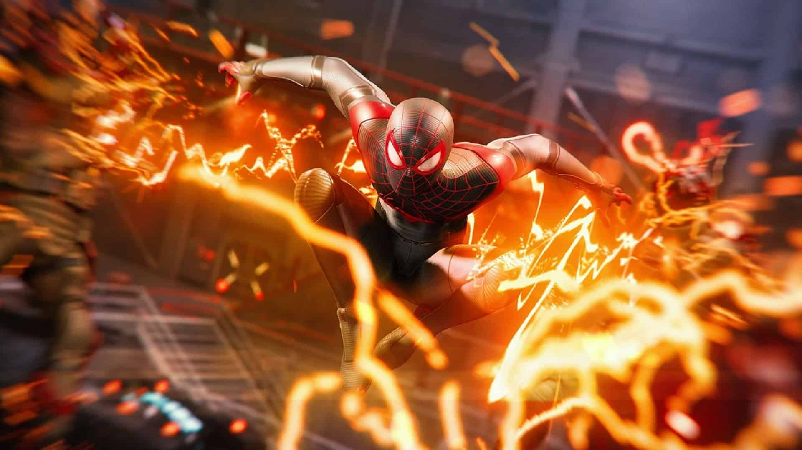
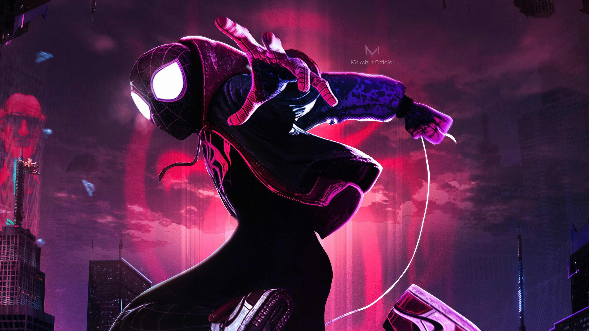
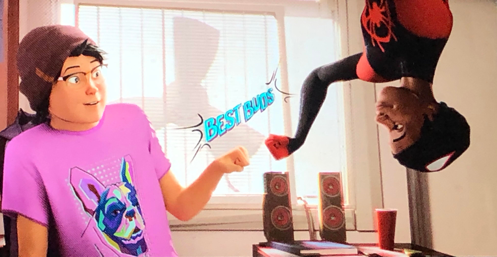
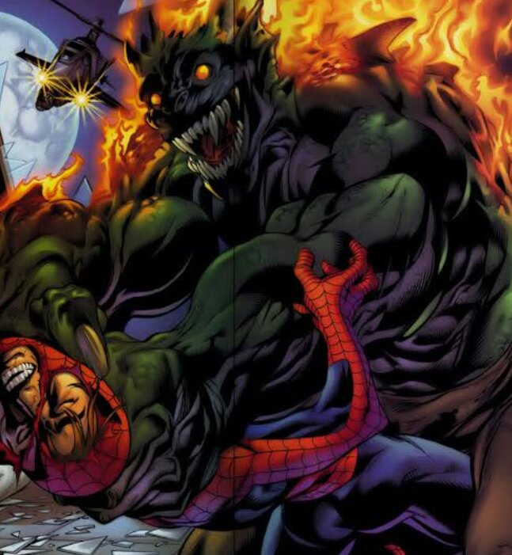

MILES MORALES

https://marvels-spider-man.
fandom.com/wiki/Miles_Morales
Idade:
13 (Spider-Man: Miles Morales 2018), 17 (Marvel's Spider-Man: Miles Morales 2020);
Origem: Bairro do Brooklyn, cidade de Nova York, Estados Unidos;
Familiares conhecidos: Jefferson Davis(pai), Rio Morales(mãe), Aaron
Davis(tio);
Ocupação Pré-Poderes: Era estudante na escola Brooklyn Visions
Academy;

https://ahoradoplay.com/marvels-spider-man-
miles-morales-nova-gameplay-e-
focada-no-combate-e-furtividade/
Poderes: Super força, Agilidade, Velocidade e
resistência sobre-humanas, Bioeletricidade, Invisibilidade, Regeneração,
Sentido Aranha, Veneno
paralisante e, teoricamente,
imortalidade.

https://pt.ign.com/spider-man-miles-
morales/91026/video/spider-man
-miles-morales-trailer-gameplay
Prólogo das HQs: Antes do começo da história de envolvimento com o Aranha-verso, Miles Morales era um adolescente negro comum vivendo sua vida no Brooklyn, comemorando junto de seus pais sua entrada para um novo colégio público bem concorrido na cidade. Sempre se destacando pela sua inteligência e visto pela família como um garoto "de ouro"

https://marvel.fandom.
com/wiki/Miles_Morales
Família: Miles é filho de Rio Morales(Sua mãe), uma ativista política, e Jefferson Davis(seu pai), que é um policial civil. A relação entre eles sempre foi muito estável e saudável (salvo situações desnecessárias de vergonha alheia). O que colaborou para o aumento do trauma de quando seu pai faleceu em uma das versões da HQ. Davis era um homem com um coração muito bom, mas que, por razões pessoais, odiava o Homem aranha; um fato que ampliou a dificuldade de aceitação do Miles quando descobriu seus poderes.

https://battlepenguin.com/gaming
/spider-man-miles-morales/
Como ganhou poderes: Quando vai visitar seu tio Aaron, irmão de seu pai cujo qual não consegue se dar bem, e é picado por uma aranha peculiar. Miles começa a convulsionar, espumar em sua boca e desmaia, acordando depois com o seu pai chegando para ajudar mas que se distrai discutindo com o seu irmão. No meio da confusão, Miles sai para a rua e assim que seu pai percebe, começa a procurá-lo.

https://marvel.fandom.
com/wiki/Miles_Morales
Em um momento, Miles é surpreendido pelo seu pai que dá de cara com ele, mas, não conseguindo vê-lo, Miles percebe que seu corpo estava invisível e suas roupas também. E em momentos seguintes descobrindo força, rapidez e uma agilidade anormal, além do choque que consegue transmitir por suas mãos.

https://marvel.fandom.
com/wiki/Miles_Morales
Mais tarde, Ganke, seu melhor amigo, percebe que Miles não é um mutante, mas, que teve seu DNA alterado pela aranha que fora picado, assim como o Homem Aranha. Miles após receber essa informação, tenta subir nas paredes do seu quarto e consegue.

https://ahoradoplay.com/marvels-spider
-man-miles-morales-nova-gameplay-e-
focada-no-combate-e-furtividade/
Início da vida de herói: Após ter ido visitar novamente seu tio Aaron com Ganke para tentar descobrir a procedência da aranha e descobrirem que o mesmo sumiu sem deixar vestígios, os meninos avistam um prédio em chamas e se aproximam ao ver uma mulher e uma menina gritando pela janela, em perigo. Miles se vê compelido a tentar ajudar, e acaba salvando as pessoas na frente de uma multidão.

https://marvel.fandom.
com/wiki/Miles_Morales
Pressionado, Miles foge para longe e já desiste da missão que foi lhe dada ao receber os poderes, dizendo que nunca quis ser um super herói, mas sim, uma pessoa normal. No dia seguinte, Miles está com Ganke no primeiro dia de aula na escola interna.

https://marvel.fandom.
com/wiki/Miles_Morales
No meio da noite, há uma emergência e todos são chamados à permanecer na quadra da escola, e assim recebem a notícia que havia um confronto entre o Doende Verde e o Homem Aranha, em que Peter estava morrendo. Miles consegue sair da escola para ver o que estava acontecendo, mas chega tarde e acaba por presenciar a morte do Homem Aranha. M Miles se culpa, dizendo que foi egoísta e que se tivesse ajudado, talvez o herói não estivesse morto.

https://marvel.fandom.
com/wiki/Miles_Morales
No outro dia, os meninos foram ao local do funeral de Peter, e Miles encontra uma mulher que viu na noite anterior que estava muito abalada, Gwen Stacy. ;Eles conversam e Miles pergunta à ela do motivo pelo qual Peter se tornou o Homem Aranha, e Gwen responde lembrando a noite em que o o tio Ben foi morto por bandidos e que Peter não conseguiu ajudá-lo, e antes disso, deixando para ele a lição "Com grandes poderes, vêm grandes responsabilidades", inspirando Miles a aceitar seus poderes e sua missão.